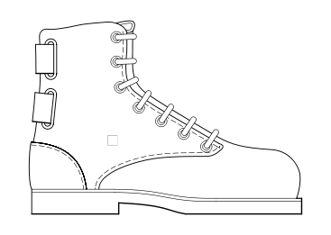

|  |
boot.kernel.org(BKO) : Booting your machine over HTTP |
| Q. |
Types of gpxe images supported.
|
| A. |
Gpxe supports many types of gpxe images which can be used depending on your needs. You can downaload them at gpxe images |
| Q. |
Script for DHCP networking
|
| A. |
This gpxe script make sure that machine will boot with DHCP networking. #!gpxe echo "Hi, We will be using BKO from URL http://boot.kernel.org/" echo "It is assumed that you have dhcp networking" ifopen net0 dhcp net0 set 209:string pxelinux.cfg/default set 210:string http://boot.kernel.org/bko/ echo "Here we go" chain http://boot.kernel.org/bko/pxelinux.0 echo "PxeKnife booting cancelled, using local disk instead.." |
| Q. |
Script for static networking at boot time
|
| A. |
Following script provides you an interface at boot time, where you can provide the network configuration.
#!gpxe echo As you dont have DHCP, you need to give details about network configuration echo Soon, you will be presented with interface to provide details about network configuration echo Please provide, IP address, Netmask, Gateway and Router ifopen net0 set net0/ip 10.0.2.15 set net0/netmask 255.255.255.0 set net0/gateway 10.0.2.2 set net0/dns 10.0.2.3 sleep 3 config net0 set 209:string pxelinux.cfg/default set 210:string http://boot.kernel.org/bko/ echo "Here we go" chain http://boot.kernel.org/bko/pxelinux.0 echo PxeKnife booting cancelled, using local disk instead.. |
| Q. |
script for network configuration at compile time.
|
| A. |
You can also provide your network configuration at pxe compilation time. This way it will not prompt the user at boot time. #!gpxe ifopen net0 set net0/ip 10.0.2.15 set net0/netmask 255.255.255.0 set net0/gateway 10.0.2.2 set net0/dns 10.0.2.3 set 209:string pxelinux.cfg/default set 210:string http://boot.kernel.org/bko/ echo "Here we go" chain http://boot.kernel.org/bko/pxelinux.0 echo PxeKnife booting cancelled, using local disk instead..If you compare this script with above, we have just removed the You can modify above scripts to suit your needs |
| Q. |
Creating customized gpxe images
|
| A. |
You can create your own customized gpxe images tailered for your network card and
also add embedded script
which will use BKO for booting.
This is extended rom-o-matic.net to allow you
embedd any gpxe script.
Please visit
BKO enabled rom-o-matic.net for creating BKO enabled gpxe images. |